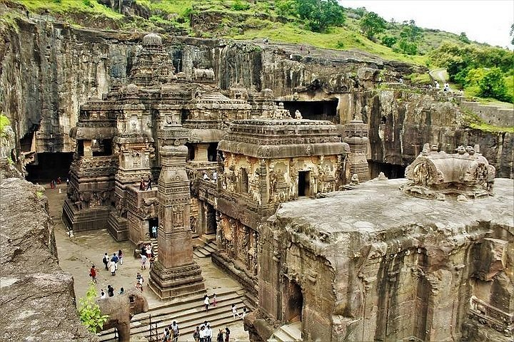
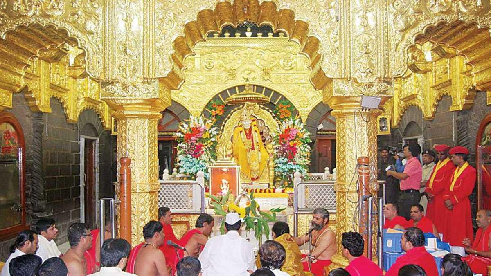
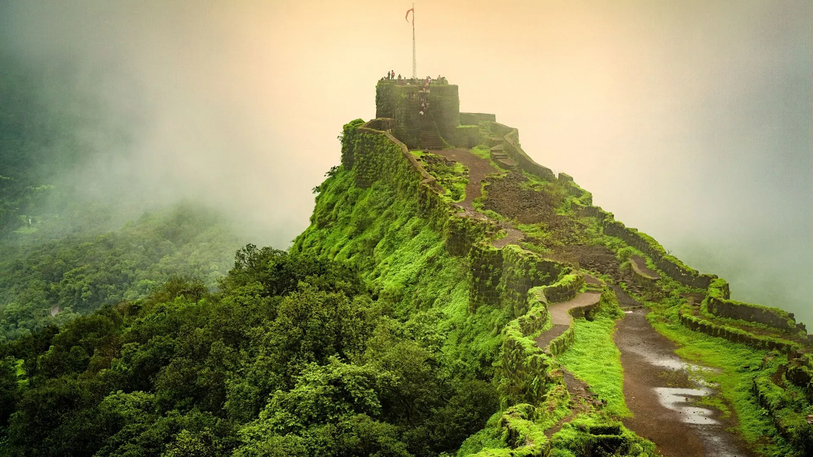
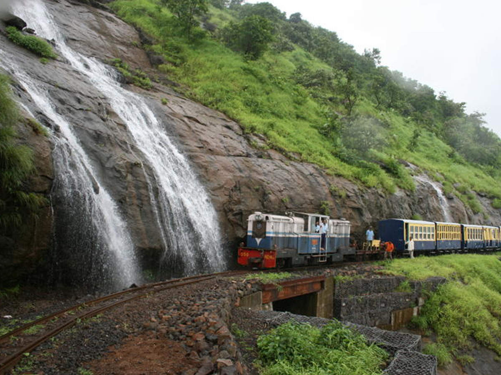

“Land of Royal Heritage, Forts, and Desert Culture”
Overview
Maharashtra is a large state located in western India.
It is known for its rich history, diverse culture, and strong economy.
The state is home to major cities, historic sites, and beautiful landscapes.
History And Background
Maharashtra has a long and influential history that stretches back to ancient times.
In early history, the region was ruled by powerful dynasties such as the Satavahanas, who promoted trade, art, and administration.
Later, rulers like the Rashtrakutas and Yadavas contributed to the development of temples, forts, and regional culture.
The medieval period marked a turning point with the rise of Chhatrapati Shivaji Maharaj, who founded the Maratha Empire and established strong systems of governance, military organization, and administration.
The Marathas later expanded their influence across large parts of India and became a dominant political force.
During British rule, Maharashtra played a key role in India's freedom struggle and produced many social reformers and national leaders.
The state was a center for movements promoting social equality, education, and reform.
After India gained independence, Maharashtra was formed as a separate state in 1960.
Since then, it has developed into one of India's most industrialized and culturally vibrant states, while preserving its strong historical identity.
Culture and Lifestyle
Maharashtra has a rich and vibrant culture shaped by history, geography, and social reform movements.
The culture reflects a strong sense of pride, courage, and respect for tradition, inspired by leaders like Chhatrapati Shivaji Maharaj.
People in Maharashtra value simplicity, honesty, and hard work in their daily lives.
Family bonds are strong, and respect for elders is an important part of society.
Traditional festivals such as Ganesh Chaturthi are celebrated with great devotion and enthusiasm, bringing communities together.
Music, dance, theatre, and folk art forms play an important role in cultural expression.
Traditional clothing and regional customs are still followed, especially during festivals and ceremonies.
The lifestyle of Maharashtra shows a unique balance between tradition and modernity.
While villages follow traditional ways of living, cities represent modern education, industry, and technology.
People emphasize education, social equality, and progress, while continuing to respect their cultural roots.
Overall, the culture and lifestyle of Maharashtra reflect diversity, unity, and a progressive outlook.
Climate Information
Average Climate of Gujarat
Season
Months
Temperature(Approx.)
Tourist Crowd Level
Summer
March-June
25°C to 40°C
Fewer
Monsoon
July-September
22°C to 30°C
Medium
Winter
October-February
10°C to 25°C
High
Cities Overview
Maharashtra has many important cities that play a major role in its culture, economy, and development.
These cities represent a mix of modern urban life and rich historical heritage.
Major Cities
Mumbai- The capital city and financial center of India, known for business, culture, and entertainment.
Pune- A major educational and IT hub with a strong cultural background.
Nagpur- An important administrative and transport center located in central India.
Nashik- Known for religious importance, vineyards, and agriculture.
Aurangabad- Famous for historical monuments and cultural heritage.
Kolhapur- Known for traditional culture, temples, and handicrafts.
Tourist Attraction

Ajanta & Ellora Caves
Ancient rock-cut caves famous for paintings, sculptures, and architecture.
They are UNESCO World Heritage Sites and reflect India's artistic heritage.
Gateway of India
A historic monument built during the British period.
It is a major landmark and symbol of the state’s history.

Shirdi
A renowned pilgrimage center associated with Sai Baba.
Devotees from all over the country visit for spiritual peace.

Mahabaleshwar
A scenic hill station famous for viewpoints and cool climate.
Elephanta Caves
Ancient caves with rock-cut temples dedicated to Lord Shiva.
Alibaug Beaches
Beautiful coastal spots ideal for relaxation and water activities.
Lonavala–Khandala
Popular hill stations known for greenery, waterfalls, and pleasant weather.
They are ideal for short trips and nature lovers.
Tadoba Andhari Tiger Reserve
A famous wildlife sanctuary known for tiger sightings.
It offers jungle safaris and rich natural beauty.
More about Maharashtra

Maharashtra has a rich cultural heritage deeply connected to tradition, values, and history.
People are known for their simple lifestyle, hard work, and respect for family values.
Festivals play an important role in social life, bringing people together with joy and devotion.
Ganesh Chaturthi is the most widely celebrated festival, followed by Gudi Padwa, Diwali, and Makar Sankranti.
Folk arts like Lavani, Tamasha, and Warli painting reflect the creativity and emotions of the people.
The lifestyle of Maharashtra shows a balance between traditional customs and modern living.
The Konkan region is known for beautiful beaches and natural beauty.
It offers peaceful villages, greenery, and coastal culture.Matheran is a peaceful hill station where vehicles are not allowed.
It is known for clean air, greenery, and scenic viewpoints.
Overall, Maharashtra is a state where culture, festivals, art, and values play a major role in everyday life.
Its traditions and lifestyle add depth and identity beyond its tourist attractions, making it a culturally rich and dynamic state.
Travel Information
Best Time to Visit
The best time to visit Maharashtra is October to March.
The weather is pleasant and suitable for sightseeing and travel.
Summers are hot, while monsoon brings heavy rainfall in many regions.
How to Reach
Maharashtra is well connected by air, rail, and road.
Major cities have airports and railway stations with good connectivity.
State transport buses, taxis, and local transport are easily available.
To book train tickets for traveling in Maharashtra, visit the official railway website irctc.co.in
To book air tickets for traveling in Maharashtra, visit official airline websites or trusted flight booking platforms.